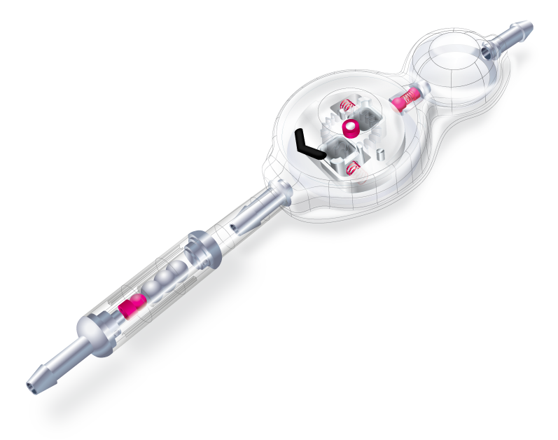
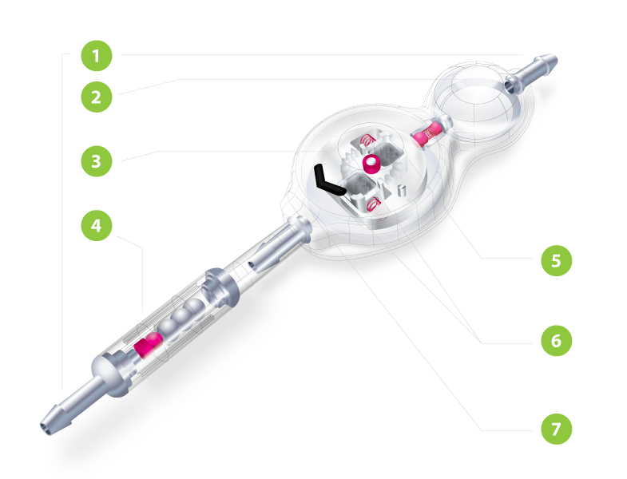
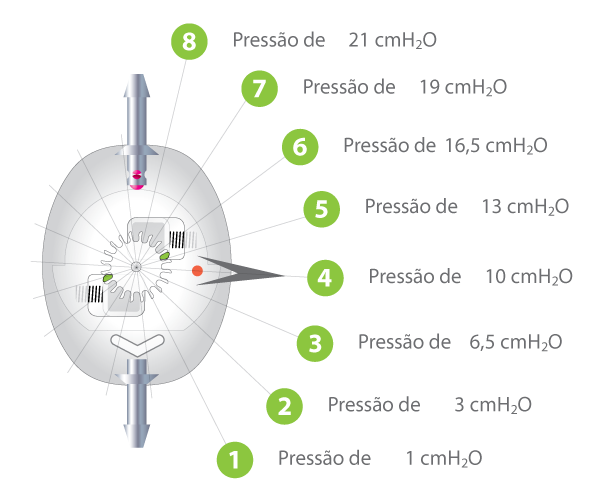
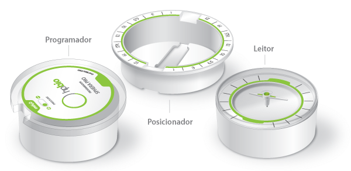

SPHERA
PRO
DERIVAÇÃO PARA HIDROCEFALIA PROGRAMÁVEL


DERIVAÇÃO PARA HIDROCEFALIA PROGRAMÁVEL

Sphera Pro é um sistema de derivação cerebral para o controle da pressão intraventricular com válvula programável. Foi desenvolvido para proporcionar PRECISÃO no controle da pressão, SEGURANÇA contra desprogramação, e FACILIDADE no ajuste da pressão.
A válvula possui 08 diferentes pressões, e o ajuste da pressão pode ser realizado sempre que necessário por um dispositivo magnético não invasivo e indolor ao paciente. A segurança contra desprogramação por atuação de campos magnéticos externos é proporcionado por um exclusivo sistema de duplo travamento que mantém a válvula na pressão escolhida, mesmo quando o paciente é submetido a exames de RM de até 3 teslas.
O sistema Sphera Pro pode ser fornecido em conjunto com o dispositivo antigravitacional SPHERA GRAV, que atua no controle na pressão intraventricular quando o paciente muda da posição horizontal para vertical, prevenindo a hiperdrenagem principalmente em pacientes com Hidrocefalia de Pressão Normal (HPN).
A válvula e o reservatório são fabricados em polysulfona com revestimento em silicone e conectores em titânio. O cateter ventricular e peritoneal do sistema são de silicone transparente, com um filete radiopaco que possibilita visualização em exames de imagens e minimiza a ocorrência de calcificação em seu trajeto.

Durante o ajuste, a movimentação do rotor altera a distância entre o eixo do rotor e o mecanismo Sphera (mola, esfera e acento cônico de rubi), aumentando ou diminuindo a pressão da válvula.
O rigoroso controle dimensional do raio do rotor permite definir com precisão as 08 diferentes pressões de abertura e fechamento do sistema, proporcionando real controle da pressão intracraniana quando o ajuste de pressão é realizado.

O dispositivo de programação proporciona facilidade no ajuste da pressão, pois permite a fácil localização da válvula, não gera dor ao paciente e possibilita a confirmação imediata da pressão ajustada, sem a necessidade de exame de imagem
Como a centralização correta do dispositivo de programação sobre a válvula é essencial para o destravamento e ajuste da pressão, o leitor possui um sistema de indicação de alinhamento que confirma a posição correta.

Observação: as informações técnicas deste produto não se limitam às características apresentadas neste site. Para informações completas, solicite as Instruções de Uso para info@hpbio.com.br